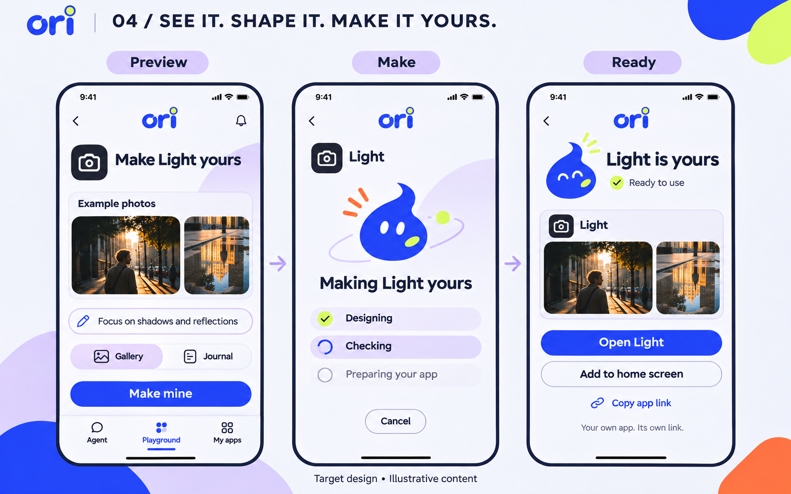
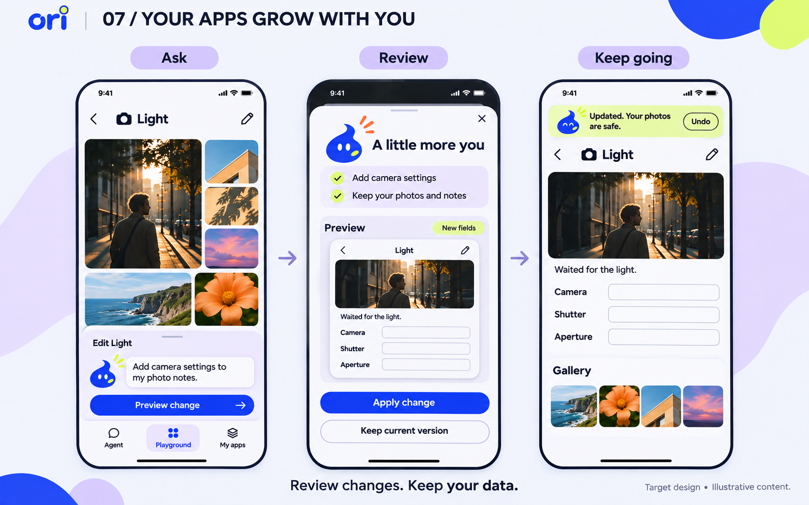
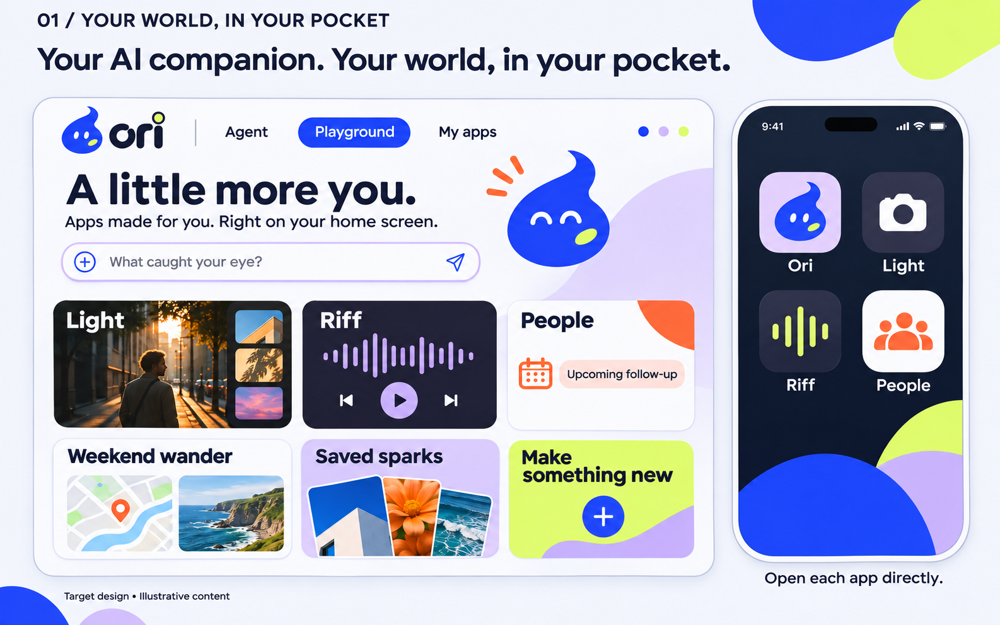

01AGENT
What caught your eye?
Help me notice light on my walks.
Share a thought.
Your interests, needs, and the context you choose to bring.
MEET ORI
An AI companion that turns your interests
into apps made for you.
01 / THE PROBLEM
“I want to take
photos like this.”
“I want to learn
that song.”
“I should follow up
with Maya.”
Find a tool. Set it up.
Make it fit. Remember to return.
02 / THE ORI EXPERIENCE
Help me notice light on my walks.
Your interests, needs, and the context you choose to bring.
Discover possibilities before you have a full specification.
A purpose-built interface you can use, reopen, and adapt.
03 / ONE INTEREST. ONE COMPLETE JOURNEY.
LIGHT / 01
“Help me notice light
on my walks.”
03 / ONE INTEREST. ONE COMPLETE JOURNEY.
LIGHT / 02
Your tools should change
without losing your work.
03 / ONE INTEREST. ONE COMPLETE JOURNEY.
LIGHT / 03
The value is coming back
to something that is yours.
04 / OUR FIRST USERS
AI-comfortable students.
Many interests. Many commitments.
Personal recruitment access.
No institutional partnerships claimed.
Help each person make one useful tool.
Watch for a meaningful action on a later day.
Measure week-four use and actual payment.
05 / THE BUSINESS HYPOTHESIS
14days
Full-product trial
$7.50/mo
The following two months
$15/mo
Thereafter
Creation gets attention.
Continued usefulness earns renewal.
Meaningful use · Full-price renewal · Cost to serve
06 / TECHNICAL FEASIBILITY
What the user shares and approves.
AI proposes within supported capabilities.
Distinct interfaces. Separate saved records.
The critical test: use, revise,
and reopen without losing work.
07 / RESEARCH & VELOCITY AI
ORI
Apps made for you. Right on your home screen.